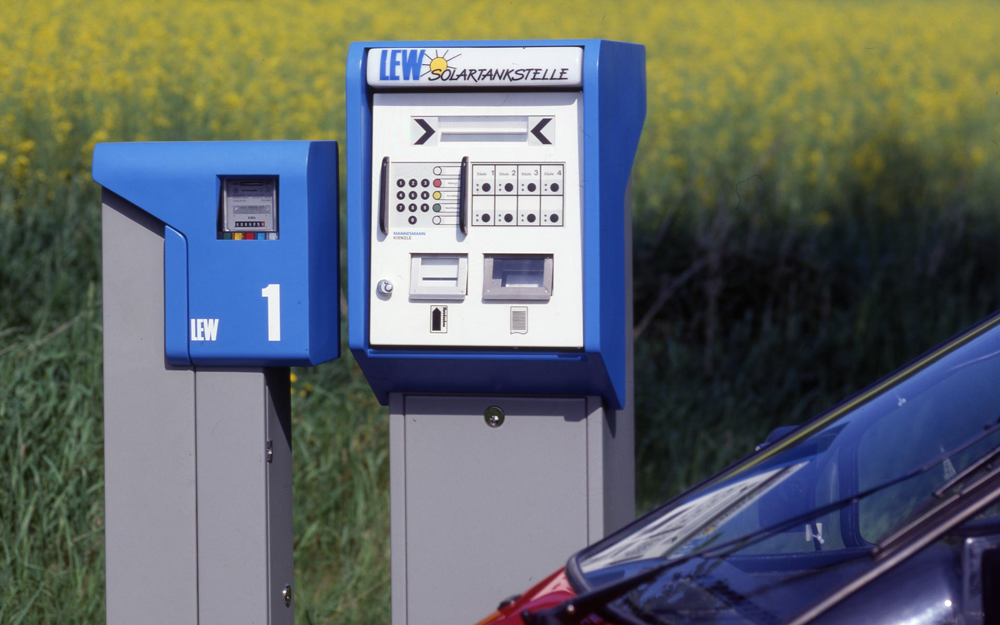
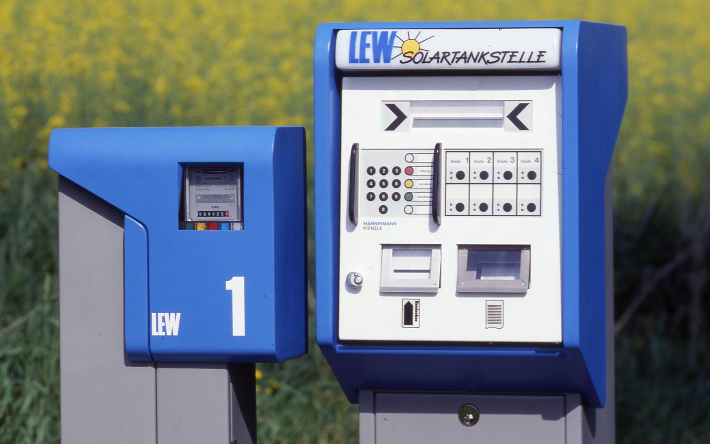

Solar Charging Station
LEW Lech-Elektrizitätswerke AG, 1992
Solartankstelle
LEW Lech-Elektrizitätswerke AG, 1992
Environmental pollution is a worldwide problem which can only be mitigated by taking new approaches and
implementing innovative technologies.
The electrical utility company LEW offers recharging at its solar charging station and sets a good example
by promoting the use of quiet, exhaust-free electric cars.
Besides the photovoltaic installation this station consists of a central terminal with access control
through magnetic card and up to eight pillars for current collectors. Sockets for all common kinds of
plugs are fitted in an ergonomically favourable height and usable for even wheel-chair drivers. A
lockable
door prevents access of unauthorized persons and leads the electric cable in a controlled manner to the
earth to prevent accidents by stumbling.
The primary design objective was to ensure that the motorist could connect up to the power supply
easily, quickly and safely. The design and the choice of materials were influenced partly by the need
for robustness and durability, but also by the need for simple low-cost manufacturing methods to make
the product economically viable in small numbers. The design of the terminal and the filling pump
succeeds in finding that exclusive happy medium between the striking and the unobtrusive.
Drivers of electric-powered cars will certainly have no difficulty in recognizing the new solar filling
stations.
The compact recharging pillars are of a deliberately plain design, and blend into their surroundings,
instead of being a form of visual pollution, like most filling stations.
Umweltverschmutzung ist ein weltweites Problem, das nur durch Beschreiten neuer Wege und Umsetzen
innovativer Technologien zu mildern ist.
Die LEW geht hier mit gutem Beispiel voran und fördert mit ihrer solar gestützten Ladestation den
Individualverkehr mit leisen, abgasfreien Elektromobilen.
Die Solartankstelle besteht neben der Solarzellenanlage aus einem Zentralterminal und bis zu acht
Zapfsäulen für die Stromabgabe. Der Anwender bedient sie mit einer Magnetkarte und einer persönlichen
Geheimnummer. Er bekommt über das Terminal Zugang zur ausgewählten Zapfsäule. Die Steckdosen für alle
gängigen Steckerarten sind in ergonomisch richtiger Höhe angeordnet und auch für Rollstuhlfahrer
bedienbar. Die verriegelbare Türe verhindert den Zugriff Unbefugter und führt das Kabel kontrolliert zum
Boden, vermeidet somit die berüchtigte Stolperfalle.
Wichtigstes Gestaltungsziel war die sichere, rasche Bedienung. Bei der Gestaltung und bei der Auswahl
der Materialien ging es um die Robustheit und Langlebigkeit der Anlage, aber auch um die einfache
kostengünstige Fertigung in heute noch geringen Stückzahlen. Das Design von Terminal und Zapfsäule
findet die schmale Zone zwischen auffallend und unaufdringlich.
E-Mobilisten können die Solartankstelle deutlich erkennen. Zugleich aber fügen sich die kompakten,
betont einfach gestalteten Säulen gut in die Umgebung ein und tragen nicht wie die meisten
Benzintankstellen zur visuellen Umweltverschmutzung bei.


Images © Selić Industriedesign